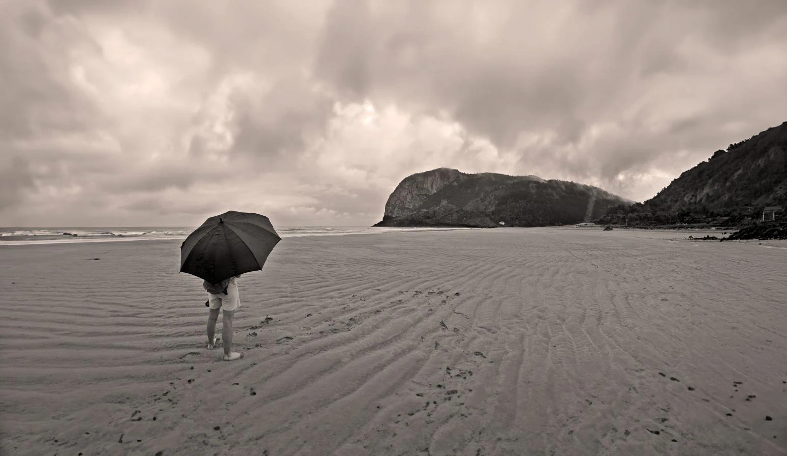
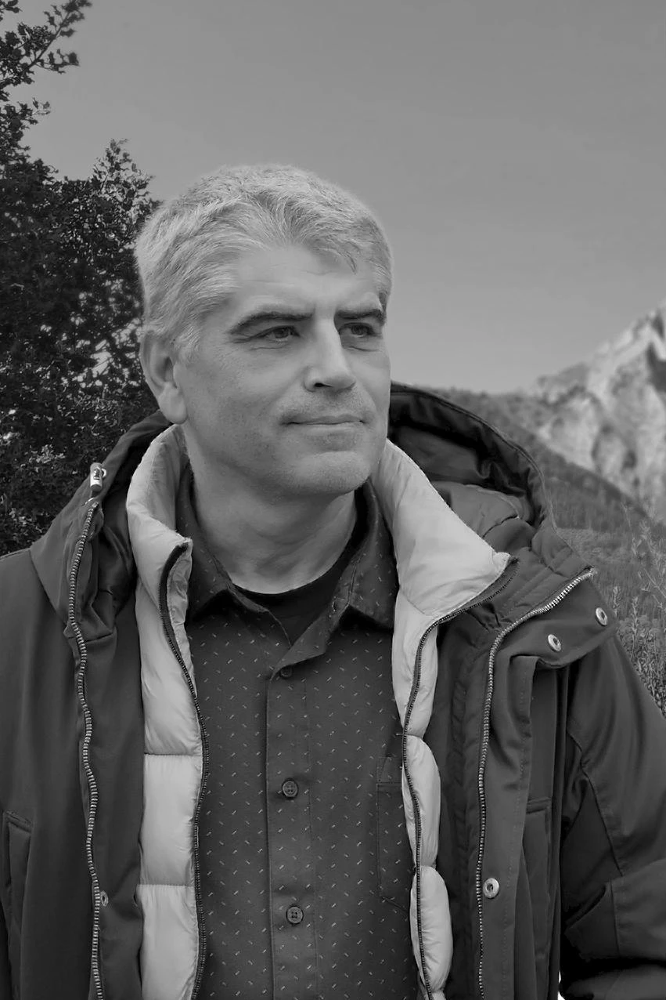
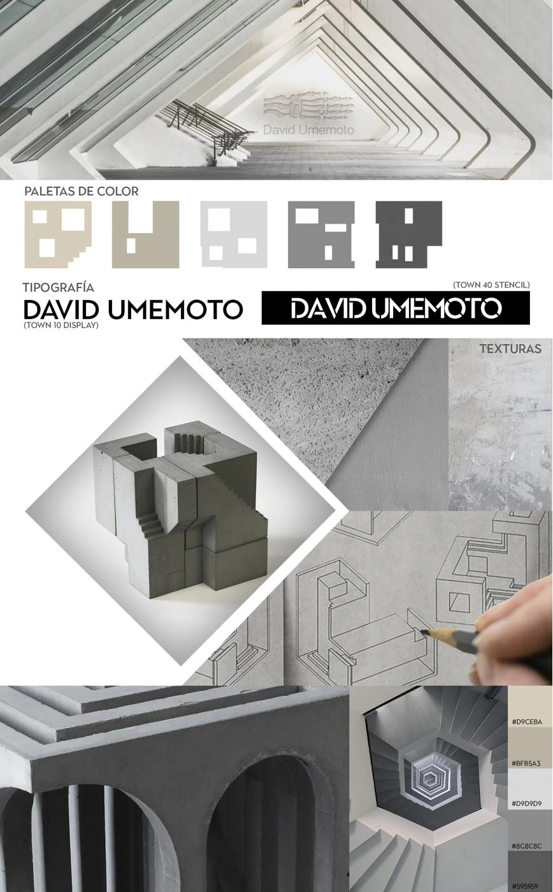

Cómo diseñé el reloj CAICOS: del plano técnico a la pieza real
51 unidades numeradas. Movimiento Miyota 9015. El proyecto más singular de mi portfolio, con el proceso completo visible.
Leer artículo
Vitoria-Gasteiz
Fotografía, diseño editorial y comunicación visual en Vitoria-Gasteiz. Criterio consolidado, herramientas actuales.
* Proyecto académico de identidad corporativa
El trabajo de un diseñador gráfico con raíces en la fotografía y el diseño editorial. Cada proyecto tiene proceso, decisiones y resultado documentado.

He trabajado la imagen desde distintos ángulos: primero con una cámara en la mano, después como diseñador gráfico con las herramientas del diseño, y cada vez más integrando inteligencia artificial en el proceso. Domino el ciclo completo: captura, retoque, composición, maquetación y preimpresión.
Conoce mi trayectoria Ver portfolio completo en PDFFotografía con luz de estudio para e-commerce, catálogos y campañas. Especialización en relojería de precisión y joyería.
Fotografía de productoCreación de identidad visual completa: logotipo, manual de marca y aplicaciones. El trabajo de diseñador gráfico más estratégico: desde el briefing hasta la entrega de todos los archivos.
Identidad corporativaLibros, catálogos, revistas y suplementos de prensa. Flujos de trabajo orientados a preimpresión con experiencia en producción diaria de periódico.
Diseño editorialRetoque fotográfico de alta calidad, restauración de fotografías antiguas, fotomontajes y composición digital avanzada.
Retoque fotográfico51 unidades numeradas. Movimiento Miyota 9015. El proyecto más singular de mi portfolio, con el proceso completo visible.
Leer artículoTodo lo que he aprendido fotografiando relojes en 32 años: reflexiones, luz por capas y el trabajo de postproducción que nunca se nota.
Leer artículo
No como sustituto del criterio creativo, sino como herramienta que lo amplifica. Mi metodología real con proyectos concretos.
Leer artículoDiseñador gráfico disponible para proyectos en Vitoria-Gasteiz y en remoto. Cuéntame qué necesitas.
Escribir a Ismael